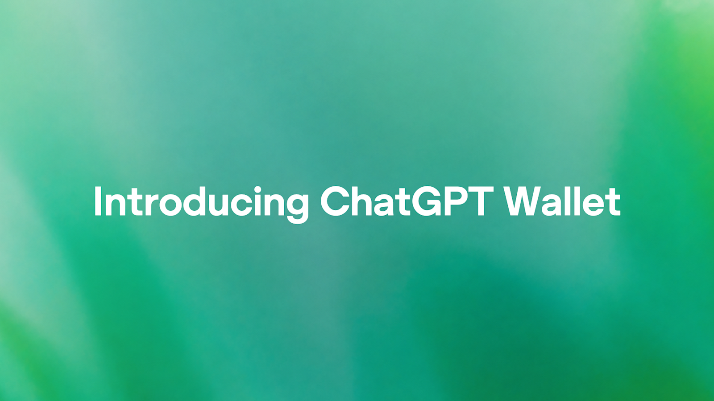
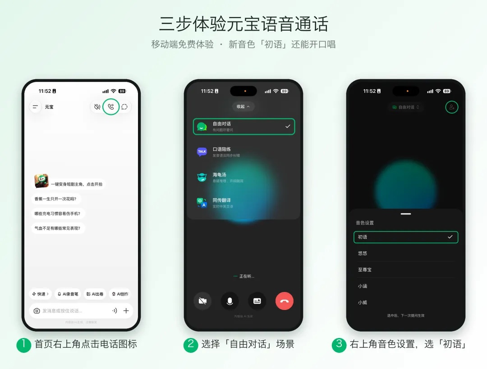
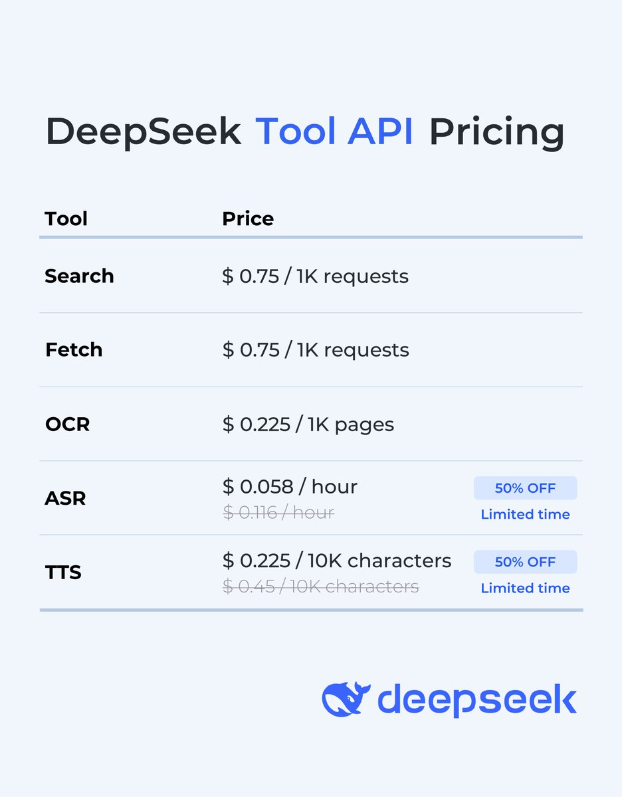

AI Intelligence Daily · 2026-11-14（周六）
统计窗口：2026-11-13 08:00 → 2026-11-14 08:00（上海 / Asia/Shanghai）· 事实与判断分区 · 国内/国际双轨 · 承接 Daily 11-13 与快讯 11-13 23:22 PUSH（DeepSeek 完整应用 API 套件、Qoder 0.5.11）· 上次完整快讯覆盖到约 15:22Z；过夜切片（15:22Z→00:00Z）新发船与补核：ChatGPT Wallet（官网/RSS 15:00Z，快讯漏收；@ChatGPT 16:44:49Z）、Antigravity Dynamic Workflows、Claude Projects 公测更新、混元 Hy Realtime（下午媒体已报、快讯漏收）、讯飞 WinWork V1.1.24、Claude Code 2.1.325 / Desktop v5.11492.5、Copilot CLI 1.0.111→1.0.112、Codex latest 0.169.0、OpenCode v2.3.0、ZCode changelog 3.18.2（自动更新仍 3.18.1）· **一线 Desktop/CLI 功能发船 desktop_shipping = 2（Qoder 0.5.11 · 讯飞 WinWork V1.1.24）** · 窗后约 5 分钟（不计入窗内 shipping）：Factory CLI+Desktop **1.11.0**（npm 00:05:33Z / 08:05 CST，官方 changelog 日期 November 13）· 不计 shipping：Claude Code 2.1.325 / Desktop v5.11492.5（默认权限收紧 + 安全修复）· Codex 0.168→0.169（workspace / Cloud 为 opt-in）· Copilot 1.0.111/1.0.112 · CodeBuddy 2.184.0（WorkBuddy Desktop 默认不变）· kimi-code 2.6.1/2.6.2（Desktop 仍 1.3.4）· Antigravity CLI 1.5.8 · OpenCode v2.3.0（开源 harness）· agent-desktop 1.3.1 · MiniMax Win 自动更新 3.1.15（Mac/changelog 仍 3.1.14，不按完整发船）· ZCode changelog 3.18.2（自动更新仍 3.18.1，不升格）· npm：codex **0.169.0**（alpha **0.171.0-alpha.4**）/ claude-code **2.1.325** / codebuddy **2.184.0** / kimi-code **2.6.2** / @minimax-ai/code **0.7.7** / dsh **0.2.2-rc.1**（RC；next **0.2.2-rc.3**）/ agent-desktop **1.3.1** / @factory/cli 窗内末 **1.10.1**（窗后 **1.11.0**）/ @github/copilot **1.0.112** / @qwen-code/qwen-code **0.27.3** · Desktop：ZCode changelog **3.18.2** / 自动更新 **3.18.1** · MiniMax Win **3.1.15** / Mac 与 changelog **3.1.14** · Kimi Desktop **1.3.4** · CodeBuddy **2.184.0**（Desktop 默认不变）· 千问办公 **2.0.0** · Qoder **0.5.11** · Antigravity CLI **1.5.8** · Claude Desktop **v5.11492.5**（bundled Code **2.1.325**）· 讯飞 WinWork **V1.1.24** · OpenCode **v2.3.0** · ★（约 08:13:12 CST）：codex-security **13,122**（+718）· deepseek-harness **280,492**（+716）· agent-desktop **23,283**（+582，v1.3.1）· agent-browser **50,712**（+389）· dsh-superagent-prototype **23,017**（+280）· opencode **226,672**（+209，v2.3.0）· chat-demo **668**（快讯时约 214，无昨晨基线）· DeepInfer **25,964**（+59）· code-verification **231**（+29）· servers **91,976**（+22，仍 v2.4.0）
今日一句话判断
代理支付从「帮你挑」走到「帮你付」：ChatGPT Wallet 用网络侧 payment token，让 dots 在用户逐笔生物核验后完成购买，而不把真实卡号交给商家或代理——官网 15:00Z 就上了线，上一轮快讯漏收。 同一夜，Google 把可批准、可复用的 Python 脚本写成 Antigravity 的 /run-workflow，用来编排并行和串行子代理；Anthropic 则把 Projects 升级成可协调并行线程的项目对话。国内下午已经发布、却被快讯漏掉的是腾讯混元 Hy Realtime（语音 Agent 工具调用，已上元宝与客服）。DeepSeek 应用 API 与 Qoder 0.5.11 已由 23:22 快讯覆盖，过夜无新修订。desktop_shipping=2。
专栏一｜新闻
本栏结构：
- 国际头条：ChatGPT Wallet（dots 代理支付；快讯漏收）
- 国内头条：腾讯混元 Hy Realtime（实时语音 + Agentic 工具调用；下午已见媒体，快讯漏收；官方长文本轮未打开）
- 国际中栏：Antigravity Dynamic Workflows（
/run-workflow） - 国际中栏：Claude Projects 更新（Code / 对话 / Cowork，分阶段公测）
- 国内中栏：DeepSeek 完整应用 API 套件（快讯 23:22 已 PUSH，过夜无修订；开源 chat-demo 星标续涨）
- 国内中栏：Qoder 0.5.11（快讯已 PUSH，过夜仍顶此条）
- 国内中栏：讯飞 WinWork V1.1.24（desktop_shipping）
- 国际中栏：Claude Code 2.1.325 + Desktop v5.11492.5（沙箱 Bash 默认改走正常权限流 + zstd 安全修复）
- 短讯：Codex 0.169.0、Copilot 1.0.111/1.0.112、Hydrogen 进入 Copilot GA、CodeBuddy 2.184.0、kimi-code 2.6.1/2.6.2、OpenCode v2.3.0、ZCode changelog 3.18.2、Antigravity CLI 1.5.8、Claude 状态页已 resolved、窗后 Factory 1.11.0 等
排序依据：重要度 → 与两条主线的相关性 → 时效。Wallet 是委托与凭证线上的产品接口；Dynamic Workflows / Projects 是可立刻对照的 Harness 原语；Hy Realtime 官方长文尚未打开，不把媒体评测升格为可引用分数。
1. OpenAI 推出 ChatGPT Wallet：代理可代付，但不接触真实卡号
A · NEW · 国际 · F/E/I · watchlist **249** · 快讯漏收 · 非 Desktop
发生时间：官网文与 RSS 2026-11-13T15:00:00Z（23:00:00 CST），落在上一轮快讯优先窗内但 23:22 未收。@ChatGPT 主帖 16:44:49Z（11-14 00:44:49 CST），属过夜切片。
发生了什么
官方文章 Introducing ChatGPT Wallet 写明：这是「第一个让代理付款却拿不到用户真实卡信息、并且每笔购买都要做安全检查」的钱包，同时保留符合条件的卡组织奖励与争议保护。合作方为 American Express、Mastercard、Visa。用户先加卡，每笔购买核验商品、总额和所用卡，再用 Face ID 或指纹等完成安全检查；随后由支付网络下发 payment token（含替代卡号、安全码和有效期），「ChatGPT Wallet 不会把真实卡号分享给商家或代理」。长期预期是用户可按支出限额、品类或时段把购买完全委托给 agent。同期发布 Commerce Partner Playbook：商家需用 Web Bot Auth 识别签名请求，并与 Forter / Riskified / Sardine / Signifyd 及 Adyen / Checkout.com / Stripe 等合作识别合法代理交易；也可为站点增加插件或 WebMCP 工具。可用性：即日起在 dots 滚动放出，先面向美国、年满 18 岁、持有合格美国发卡的 ChatGPT Pro 订阅者。
@ChatGPT 主帖原文为 “Now your dot can securely complete purchases on your behalf—with your approval.” 工具读数：展示 402,407 / 赞 3,547 / 引用 315 / 回复 462 / 转发 277 / 收藏 577。
我的判断
判断：这不是又一个结账插件，而是把「代理被允许花谁的钱、花到哪一步必须再问人」写成产品契约。逐笔生物核验说明今天的信任模型仍是人在环内授权；payment token 把真实凭证留在网络与银行一侧，代理和商家都拿不到明文卡号，这比把卡号塞进工具上下文更接近可运营的委托。Playbook 把 Web Bot Auth 和风险识别写成商家适配条件，说明障碍不仅在钱包本身，还在站点防火墙和风控把合法代理流量当成机器人。长期「按限额/品类/时段完全委托」被写成预期，不是已交付能力，不要提前写成无人值守支付已经 GA。快讯漏收是执行缺口：RSS 15:00Z 已出，23:22 扫描未吸收。
未来影响
若这一套被卡组织和风控机构接受，Agent 购物会从演示走向可清算的交易。短期仍是美国 Pro + dots 的有限放量，用来观察误拦、拒付和争议。对企业采用的含义是：站点要能识别签名的 Agent 请求，支付风控要能区分「合法代理交易」和自动化欺诈。它也可能把 Agent 身份从「谁在调用 API」扩展到「谁被允许动用资金」。
对智能体互联网
值得直接对照。核心结构是：用户委托 → 逐笔（或未来按参数）授权 → 网络侧 token，而不是把支付凭证交给 Agent Runtime。Web Bot Auth 和 WebMCP 是商家侧识别与工具面，属于发现和互操作的相邻层。还没有形成跨厂商的通用 Agent 支付协议，不要把 Wallet 写成行业标准。
对 Work / Agent 引擎
无直接的 Harness 发船。若引擎或浏览器代理会完成购买或调用付费第三方，应把「明文凭证不得进入工具上下文或日志」和「每笔或按策略再授权」写成默认约束，而不是事后补丁。
值得进一步做什么
- 对照官方 Playbook，记下 Web Bot Auth、产品 feed 与风控适配的最低要求。
- 跟踪放量范围是否扩大到非 Pro、非美国，以及「限额/品类/时段完全委托」是否给出可核验接口。
- 关注是否出现可互操作的支付 token 或开放协议，而不只是 dots 专有实现。
配图
见图 1（官方介绍文发布配图，来源页 Introducing ChatGPT Wallet）。

真实来源
- https://openai.com/index/introducing-chatgpt-wallet
- https://openai.com/news/rss.xml（
pubDate与文内日期为 November 13, 2026 / 15:00:00Z） - https://x.com/ChatGPT/status/2121283151729496235
2. 腾讯混元发布实时语音模型 Hy Realtime，已上线元宝语音通话与腾讯客服
A · NEW · 国内 · A/E/I · watchlist **250** · 快讯漏收 · 非 Desktop · 官方长文本轮未打开
发生时间：第一财经 2026-11-13 16:38:55 CST（08:38:55Z），更新 16:40:02 CST；IT之家 16:41:34 CST；36氪快讯 16:59 CST，写「腾讯混元发文称」。官方网页 Demo 对象 Last-Modified 12:11:17Z（20:11:17 CST），只能证明该入口在窗内已存在或更新，不能当作发文时刻。均早于 23:22 快讯截止。
发生了什么
已打开的第一财经导语写明：11 月 13 日，腾讯混元发布全新实时语音模型 Hy Realtime；在语音理解、指令遵循、拟人化表达之外，新增 Agentic 工具调用与唱歌能力；已在元宝语音通话、腾讯客服上线，近期也将上线腾讯云、对外提供 API。IT之家与 36氪的转述与此一致，并补充：工具调用可按上下文决定是否联网搜索，并把搜索决策、调用与回答一并完成；唱歌与腾讯音乐 TME 灵音 AI 团队 Co-Design；体验入口为最新版元宝 App 语音通话中的「初语」音色。本报打开官方 Demo 页 混元语音对话 - 腾讯云 TRTC，HTTP 200，由腾讯云 COS 托管；页为需验证码的前端应用，未登录无法核验 Demo 内功能清单。hunyuan.tencent.com 博客列表本轮需登录，官方公众号/博客长文 URL 未打开。腾讯云文档检索未核到已上线的按量 API，不能写成云 API 已 GA。官方未在已打开页面公布参数量、上下文长度或云 API 定价。媒体所附评测图为内部或自建集与公开语音基准的定性结论，不把「领先」写成可引用分数。
我的判断
判断：这是国内 P0 厂商把实时语音从「更好聊」推到「能在通话里决定要不要调用工具」。它对语音 Agent 和客服场景有产品意义，但还不是 Desktop / Coding Harness 发船，也不应在官方长文和云 API 文档未打开时升格为强 A。规划中的双工交互、长期个性化记忆、前后台 Agent 交互，只是媒体转述的下一步，不是已交付能力。下午快讯漏收，主要是官网为 CSR 壳、官方 X 当时也未必有可检索主帖；日报以可打开的媒体导语加官方 Demo 入口补记，并明确长文缺口。
未来影响
若云 API 如期上线，国内实时语音 Agent 会多一条可编排的官方能力，尤其是通话中的搜索与工具调用。短期先看元宝和客服里的实际表现，以及官方是否给出延迟、打断、工具失败时的行为说明。不要根据媒体评测图预估效果。
对智能体互联网
有限启示。通话中的工具调用仍是单厂商产品内编排，还不是可互操作的语音 Agent 协议或身份层。若后续云 API 把工具调用、引用和安全审查写成接口契约，再对照 DeepSeek 应用 API 的 safety_check 思路。
对 Work / Agent 引擎
若引擎要接语音通道，应把「模型在对话中自行决定是否搜索/调用工具」与文本 Loop 的权限模型分开设计：谁批准联网、失败时如何回退、音频是否进入长期记忆。目前还没有可核验的官方 API 形状，暂不宜做对接 PoC。
值得进一步做什么
- 跟踪官方博客/公众号长文与腾讯云 API 文档是否上线，补齐能力边界与定价。
- 若额度恢复，补核
@TencentHunyuan是否有窗内主帖。 - 在官方接口未公布前，暂无需行动。
配图
见图 2（IT之家稿内转载的介绍配图，来源页 IT之家 · 腾讯混元发布 Hy Realtime）。未采用文内评测图，以免把未打开的官方分数写成事实。

真实来源
- 官方 Demo：https://rtcube.cloud.tencent.com/component/hunyuan/index.html
- https://www.yicai.com/news/103440081.html
- https://www.ithome.com/1/026/825.htm
- https://www.36kr.com/newsflashes/4067936963187591
3. Google Antigravity 推出 Dynamic Workflows：用可批准的 Python 脚本编排子代理
A · NEW · 国际 · B/C · watchlist **251** · 过夜 · 非 Desktop 新版本
发生时间：@antigravity 19:41:43–44Z（11-14 03:41:43–44 CST）；官方文档页 Last-Modified 20:34:59 GMT。
发生了什么
官方 X 原文写明：Antigravity 正在放出 Dynamic Workflows；使用 /run-workflow 后，代理会写一段 Python 脚本，编排并行和串行的子代理，并做结构化交接，「以确定性控制流代替 prompt drift」。脚本运行前先供审阅，也可以保存后反复执行。工具读数（主帖）：展示 61,173 / 赞 1,499 / 引用 44 / 回复 97 / 转发 109 / 收藏 508。官方文档进一步写：脚本用 parallel() / pipeline() 分阶段并发或串行；每个子代理在独立会话中工作，返回符合 JSON Schema 的结果，「文件读取、搜索和测试日志不会进入主对话上下文」；可启动一次性代理，也可让同一个代理跨回合继续（例如发现 bug 的审查者再确认修复）。工作流在独立 Python 进程中运行，Antigravity 自带解释器，也可用 ANTIGRAVITY_PYTHON 指定 3.8+。运行前会展示脚本并征求批准（除非权限预设如 Turbo 已允许）；批准只覆盖这一份确切脚本，不能靠命令前缀规则一揽子放行。文档把它与 Orchestrator、Subagents、/swarm、/boost、/teamwork 并列：需要代理彼此商量时仍应用 /swarm，需要可预测、可重复的控制流时才用 workflow。计划可用性：Google AI Pro 与 Ultra，覆盖 Antigravity App 与 CLI。官方博客索引没有单独博文，落点是文档 + X。
我的判断
判断：这是把「多代理怎么走」从一段容易漂的提示，收成一段可审阅、可保存、可再跑的脚本。它和昨日已报的 Orchestrator（同一轨迹里切换 Carbon/Hydrogen）不是同一件事：Orchestrator 解决的是模型角色交接，Dynamic Workflows 解决的是控制流和上下文隔离。子代理不看见脚本、彼此也不看见，只通过结构化结果回到主控，这是一种比共享消息板更硬的边界。权限上仍然先批脚本、再在各自会话里按预设询问，没有改成完全无人值守。
未来影响
如果这种「脚本编排 + 结构化回传 + 主对话不进原始日志」好用，自研 Harness 很可能会抄这一层，而不是只堆更多子代理对话。它目前只存在于 Antigravity 的 App/CLI 和 Pro/Ultra 计划里，还不是跨产品协议。真正要观察的是：脚本能否稳定复用，以及复杂任务会不会又被迫退回 /swarm。
对智能体互联网
无直接的跨厂商协议或身份变更。结构化交接和「子代理彼此不可见」是进程内的 Trust 边界，还不能直接映射到 Agent 服务网络。
对 Work / Agent 引擎
值得对标。可吸收的形状是：主控写短脚本 → 人批准这一份脚本 → 子代理独立会话、按 schema 回传 → 原始工具输出不污染主上下文 → 成功脚本可入库再跑。它给「Subagent vs Workflow vs Swarm」提供了一张官方分工表，比继续混用这些词更有用。
值得进一步做什么
- 实际跑一次
/run-workflow，看脚本审批、失败回退和保存后再跑是否稳定。 - 对照自研多代理编排，是否已经把控制流与对话上下文分开。
- 关注 CLI 与 App 行为是否一致，以及组织策略如何覆盖脚本批准。
真实来源
- https://antigravity.google/docs/dynamic-workflows
- https://x.com/antigravity/status/2121327669534933025
4. Claude Projects 更新：在项目里协调并行线程，并进入 Pro / Max 分阶段公测
A · NEW · 国际 · B/C · watchlist **252** · 过夜 · 分阶段公测，不按完整 GA shipping 计
发生时间：@ClaudeDevs 线程 22:51:01–22:51:04Z（11-14 06:51 CST）。产品页 https://claude.com/form/projects ；/resources/articles/projects 本轮 404，未见同题专文。
发生了什么
产品页标题为 Projects are becoming a conversation with Claude，正文写：把需要做的事随时说出来，Claude 会分别接住、协调各条线程并在过程中汇报；「这对 Claude Code 是新能力，也是对你已在 chat 和 Cowork 里使用的 projects 的一次升级」。官方写明分阶段放出，可加入候补名单以更早使用。@ClaudeDevs 主帖称项目里的协调器「现在积极得多」，会在项目聊天里回答问题并汇报正在进行的线程状态。工具读数（主帖）：展示 189,662 / 赞 5,204 / 引用 97 / 回复 208 / 转发 200 / 收藏 1,769。同线程还宣布：/btw 与 /fork 可在 projects 使用；可给 thread 设提醒并由 Claude 在项目聊天中提起；可以把单个 thread 以只读链接分享给已登录用户，但「曾经访问过你计算机的线程不能被分享」；artifacts 更易发现；项目设置和本地文件夹访问被简化。官方称 web、desktop 和最新 mobile 已有新设计；「Projects is in public beta on Pro and Max. If you don’t have it yet, you can join the waitlist!」
我的判断
判断：这是把 Project 从「一堆共享上下文」推向「一个会协调并行工作的对话面」。对 Work 引擎有意义的不是新皮肤，而是协调器、线程提醒、fork，以及一条明确的分享红线——碰过本机文件系统的线程不能外发。它已经写到 Claude Code、chat 和 Cowork 三个表面，但仍是 Pro/Max 分阶段公测加候补，不是对所有人立即 GA，故不计入 desktop_shipping。
未来影响
若公测顺利，Coding / Cowork 产品会更常以「项目协调器 + 多线程」而不是单会话长对话来组织工作。分享与本地文件夹权限会被一起重新设计。下一步只需看候补多久转成默认可用，以及协调器会不会在未请求时自行开新线程。
对智能体互联网
无直接的跨组织身份或协议变更。只读线程分享和「访问过计算机的线程不可分享」，是产品内的委派与数据边界，可作对照，还不是可互操作的委托标准。
对 Work / Agent 引擎
值得吸收的是：项目级协调器、线程状态回报、/fork 与提醒，以及分享策略与本机权限绑定。若自研 Workspace 也有「把这一段工作发给同事」，应同样禁止导出带本机访问能力的会话。
值得进一步做什么
- 有 Pro/Max 的话加入候补或打开新界面，核验协调器是否会在未请求时开线程。
- 对照分享限制是否覆盖 Cowork 本地文件夹。
- 等待正式文档专页，避免只根据 X 线程推断默认策略。
真实来源
5. DeepSeek 开放完整应用 API 套件：托管搜索、文件、链接、语音与安全审查
A · UPDATE · 国内 · B/E/G/I · watchlist **86** · 快讯 11-13 23:22 已 PUSH · 过夜无新修订
发生时间：官方 Change Log 标注 2026-11-13；@deepseek_ai 主帖 14:24:44Z（22:24:44 CST）；开源仓 deepseek-ai/chat-demo 首个提交与 v0.1.0 14:02–14:03Z，v0.1.1 14:33:04–18Z。本报复核 Change Log 页 Last-Modified 15:01:54Z，定价页 15:02:12Z，均早于 15:22Z 快讯截止；15:22Z 之后无新顶条、无定价改写。
发生了什么
快讯已报的事实仍然成立，本报只作结构化吸收。官方 Change Log 写明：DeepSeek App（含网页版）里把网页搜索、文件输入、链接阅读、语音交互和安全审查与模型推理拼在一起的体验，即日起向开发者开放。在现有 Messages / Responses / Chat Completions 上为 deepseek-flash 打开相应参数即可，工具调用与上下文拼装由服务端完成。具体包括非思考模式的 Web Search（deepseek_web_search）、思考模式下的 Deep Thinking Search、File Input、URL Reading（deepseek_read_url），以及 Model Safety（对公众提供服务必须开启 safety_check，并自行履行内容安全审查、大模型备案与 AI 标识等义务）。Search / Fetch / OCR / ASR / TTS 同时作为独立 API 提供，并开源演示客户端。定价与快讯及官方价目图一致：Search（文本/图片）与 Web fetch $0.75 / 千次；文件解析与 OCR $0.225 / 千页；TTS 标价 $0.45 / 万字符、限时五折 $0.225；ASR 标价 $0.116 / 小时、限时五折 $0.058。仍只写 limited-time 50% off，未见折扣截止日期。模型 token 价未改。dsh npm latest 仍 0.2.2-rc.1，next 仍 0.2.2-rc.3，API 套件发船未带动 harness latest 新 tag。chat-demo 在 08:13:12 CST 星标 668（快讯时约 214；无昨晨 Daily 基线，不能写成相对 11-13 晨的 Δ）。
我的判断
判断：这不是新模型，而是把已跟踪的 Flash + Search/Fetch 扩成可复现 App 的托管工具面。对公众服务强制 safety_check，是把合规写进 API 契约。过夜没有新的接口或价格变化，本报不再当 NEW 重写，只把开源 demo 的星标和「dsh 仍未切 latest」记为当前状态。
未来影响 / 对智能体互联网 / 对 Work / Agent 引擎
与快讯判断一致：无直接的身份或协议变更；若引擎或评测走 DeepSeek，应核对这些托管工具与自建搜索/文件解析的分工，以及开启 safety_check 后部分请求参数会被服务端覆盖的约束。独立 OCR / ASR / TTS 可以不经完整对话协议单独编排。此前经 Harness / Claude Code / Codex 调用 Search/Fetch 的免费窗口已于 11-01 结束。
值得进一步做什么
- 对照官方 Build a Chatbot 与 chat-demo，核实三种 API 写法的失败模式。
- 把文件页计费和语音限时折扣（截止日期未披露）记入用量模型。
- 继续观察 dsh 是否默认接上这些服务端工具。
配图
见图 3（官方 X 价目图，来源：@deepseek_ai 2026-11-13 14:24:45Z；快讯 23:22 已用同一张图）。

真实来源
- https://api-docs.deepseek.com/updates
- https://api-docs.deepseek.com/guides/build_a_chatbot
- https://api-docs.deepseek.com/quick_start/pricing
- https://github.com/deepseek-ai/chat-demo
- https://x.com/deepseek_ai/status/2121247896918253875
6. Qoder 0.5.11：主动下一步建议、可常驻的自定义 UI 插件，以及把 Issue 分给 Agent
A · NEW（相对 Daily 11-13）· 国内 · B/C/E · watchlist **248** · 快讯 11-13 23:22 已 PUSH · **desktop_shipping** · 过夜无新实质
发生时间：官方 changelog 标注 November 13, 2026。21:13 扫描同页仍停在 0.5.7；约 15:17Z 已顶于 0.5.11。本报复核页面仍顶 0.5.11，没有被 0.5.12 顶掉，中间仍未见 0.5.8–0.5.10。@qoder_ai_ide 在快讯当时为 0；本轮国内官方 X 因检索额度不足未能补核过夜是否有补帖。
发生了什么
官方 Qoder Release Notes 标题为 Beyond Responses, Proactive Suggestions。新功能主要包括：composer 空闲且为空时主动给出下一步建议；可用 plugin-creator skill 制作带自定义界面的插件，安装后能作为应用常驻；在已开启项目协作的账号上，可为 Issue 添加评论、回复、附件，把 Issue 分给可用的 Agent，并查看执行记录。数据导入新增 Kiro IDE 的任务、记忆和受支持的 Skills / MCP / Powers，并改进跨多目录 Codex 会话的工作区信息保留。另有 IM 插件集中管理、云端自动化选择已有云资源、用 @ 引用已连接浏览器标签、在目标设备授权后于该设备创建工作区、Repo Wiki / Knowledge Cards 增量更新、SOCKS5 与 SSH 送文件等。过夜无新顶条、无新配图。
我的判断
判断：这是已在售一线 Coding Agent 桌面端的正式功能发船。自定义 UI 插件常驻为「应用」、主动建议，以及把 Issue 分给 Agent，都直接碰到插件面、交互环和任务分派。精确上线时刻官方未披露，但同一页面在 21:13 窗仍停在 0.5.7，快讯按本窗新披露打断是合适的。日报吸收后不再当今天的 NEW 故事重写一遍。
对智能体互联网
无直接的跨 Agent 身份或协议变更。Issue 分给 Agent 是产品内任务委派。
对 Work / Agent 引擎
自定义 UI 插件以 skill 创建、安装后常驻成应用，值得对照 MCP Apps、Cursor 插件和千问办公里的应用承载。主动建议发生在 composer 空闲时，要分清它是本地补全还是会先动工具或网络。
值得进一步做什么
- 实际打开 0.5.11，看自定义插件的权限、生命周期和是否可离开当前会话仍保持状态。
- 核实 Issue 指派 Agent 的账号/项目开关，以及执行记录是否可审计。
- 对照 Kiro 导入范围，避免把「可导入」写成「完全兼容」。
真实来源
7. 讯飞 WinWork V1.1.24：可用自然语言配置数字员工，并自定义 AI Connection
A · UPDATE · 国内 · B/C/E · watchlist **253** · **desktop_shipping**
发生时间：官方更新日志写「最新版本 V1.1.24（2026-11-14）」。页面 Last-Modified 2026-11-13T16:01:24Z（11-14 00:01:24 CST），落在统计窗内，且相对 23:22 基线（当时顶条仍 V1.1.23 / 11-12）为过夜增量。
发生了什么
官方 版本更新 顶条换成 V1.1.24 正式版，标题「资料库、个人助理、数字工厂更新」，称三大模块共 12 项新增与优化。资料库可在新建文件/文件夹时选择上传路径，并支持文件小窗口预览。个人助理只写了「优化本地 Agent 底层链路，提升运行稳定性」。数字工厂的新功能是：支持用自然语言配置数字员工的基础信息、技能、连接器、资料库；可自定义配置 AI Connection；岗位卡片新增权限与配置；上传资料库后出现「查看」入口。其余为任务助手过程展示、缺陷修复流程卡片、执行详情和附件交互等体验优化。原文无产品配图。
我的判断
判断：这是已在售企业数字员工客户端的功能点版本，不是首次邀测。真正有结构意义的是「用自然语言装配技能/连接器/资料库」和「自定义 AI Connection」，碰到 Skill、Connector 和本地 Agent 链路。稳定性优化本身不够单独成条，但和配置面放在同一个正式版里，达到日报 A，不按 P0 一线 Coding Desktop 首次发船的强 A 口径升格。
对智能体互联网
无直接的跨组织协议变更。岗位卡片权限仍是产品内授权。
对 Work / Agent 引擎
自然语言配置数字员工，是「用对话生成 Skill / Connector 绑定」的又一个实例，值得对照 Qoder 的 plugin-creator 和 Claude 的项目设置简化。自定义 AI Connection 则要把密钥、模型端点和权限边界写清楚，不能只看成模型下拉框。
值得进一步做什么
关注 AI Connection 是否允许任意模型端点、凭证存在哪一侧，以及自然语言配置生成的技能是否可审计、可回滚。
真实来源
8. Claude Code 2.1.325：沙箱内 Bash 默认改走正常权限流，并修复 zstd 解码安全问题
A · UPDATE · 国际 · B/G/C · watchlist **247** · 过夜 · 不计 shipping
发生时间：npm @anthropic-ai/claude-code 2.1.324 @18:42:36.300Z，latest=next 2.1.325 @20:07:25.823Z（11-14 04:07:25 CST）；GitHub v2.1.325 published 20:40:01Z。官方 changelog 日期 November 13，没有独立的 2.1.324 节。Claude Desktop / Cowork changelog 顶条升至 v5.11492.5，版本日写 2026-11-13，bundled Claude Code 2.1.325（此前 v5.11492.2 仍绑 2.1.321，且写 No user-facing changes）。Desktop 页 Last-Modified 为 cowork changelog 00:02:03 GMT、configuration-changelog.md 00:04:32 GMT，刚出 00:00Z 数分钟；版本日与 CLI 发布时间支持「11-13 过夜发版」，精确上线分钟数有不确定性。Code Mode 文档页 https://code.claude.com/docs/en/code-mode 已恢复为 200（Daily 11-13 时 404），JSON-LD dateModified 18:10:07.500Z。
发生了什么
官方 changelog 第一条是「修复 zstd 压缩响应解码中的安全问题」。更重要的行为变化是：沙箱内 Bash 默认改走正常权限流，需要把 sandbox.autoAllowBashIfSandboxed 设为 true 才保持免提示。Desktop 说明与此同向：Manual / Accept edits 下会先询问，Auto 也会检查许多命令，可用 ~/.claude/settings.json 撤回。同期还收紧了：只读 git 在非项目或未信任仓库先询问；scheduled tasks 与 /loop 在技能声明 allowed-tools / hooks 时先询问；沙箱拒绝写入 added directories 里的 .claude 设置/skills/agents/commands/hooks；worktree 隔离拒绝部分 git/scalar 命令；插件 MCP 包解压路径与远程 marketplace 组织插件判定调整。Code Mode 修复包括：进入 worktree 后脚本忽略工作树、权限对话框里输入的词到不了 Claude、以及恢复一个在 Code Mode 脚本中结束的会话时不再自行开工。文档现写明 Code Mode 仍是实验性、默认关闭，「可能在任意版本中改变或移除」。Desktop 的 General / Cowork 面仍写 No user-facing changes；configuration-changelog 写 No configuration changes。
我的判断
判断：这不是新的命名能力，而是一次默认权限回收。Daily 11-13 刚把 Code Mode 计为 shipping，过夜就把沙箱 Bash 的自动放行收了回去，还补上文档页。方向与 Antigravity 1.5.7 堵住组织策略绕过、以及后文 Factory 对 Script 预授权的收紧是同一类：先把默认动作变安全，再把便利藏进显式开关。zstd 解码修复没有给出 CVE 编号，只按官方「security issue」记录，不扩写攻击面。
对智能体互联网
无直接启示。
对 Work / Agent 引擎
默认不要让「已经在沙箱里」自动等于「Bash 免批」。技能声明的 allowed-tools 也不应在定时任务或 loop 里被静默继承。若自研 Runtime 有效仿 autoAllowBashIfSandboxed 的开关，应把它视为危险默认值而不是推荐配置。
值得进一步做什么
- 升级到 2.1.325 后确认本机/CI 是否依赖旧的沙箱免提示行为。
- 阅读已恢复的 Code Mode 文档，对照 2.1.323 以来的修复，仍按实验开关对待。
真实来源
- https://code.claude.com/docs/en/changelog
- https://github.com/anthropics/claude-code/releases/tag/v2.1.325
- https://code.claude.com/docs/en/code-mode
- https://claude.com/docs/cowork/changelog
9. 短讯合集
- Codex latest 0.169.0（B+，窗内早段，不计严格 shipping）。 相对 Daily 11-13 的 0.167.2，窗内先有 0.168.0（GH 03:54:29Z / npm 04:00:31Z），再升 0.169.0（GH 08:37:05Z / npm 08:43:21.818Z）。官方 0.169.0 新功能包括：opt-in 终端 workspace 支持多个 side-chat 标签并可在重启后重开；按名称/提示预览/工作目录搜索旧任务；全屏 transcript 可折叠回合细节；可在终端添加或编辑自定义模型供应商；
Ctrl+S把诊断 ZIP 存到本地；opt-in Cloud 连接（macOS/Linux）可从终端发图、选模型和推理力度、归档或恢复 Cloud 会话。修复含：codex exec在未信任目录即使--sandbox workspace-write仍禁用项目配置与 MCP，须--trust。workspace 与 Cloud 均为 opt-in，不按完整 Desktop 发船计。过夜 alpha 升至 0.171.0-alpha.4（npm 19:05:51Z），发行说明几乎无正文，不够单独成条。latest 过夜持平。GH 0.169.0 - GitHub Copilot CLI 1.0.111 + 过夜 1.0.112（B，不计 shipping）。 1.0.111 于 npm 13:42:41Z / GH 13:40:16Z 由今早 prerelease 转正：企业托管的 Shell/Bash/PowerShell 权限规则支持正则；
--host-allow-session-creation允许远程客户端在一次启动中创建会话而不改已存设置。1.0.112 于 23:59:41Z（11-14 07:59:41 CST） 仍落在窗内末端，多为 TUI、帮助、插件显示与粘贴修复；稍有产品意义的包括：copilot help sandbox说明 macOS 上 sandbox 主机规则会阻止到本地端口的直接 TCP；组织策略关闭 MCP 时内置 GitHub MCP 不再可用；subagents 尊重--max-ai-credits；默认改用各模型建议的上下文窗口。1.0.111 · 1.0.112 - Gemini 4 Hydrogen 进入 GitHub Copilot GA（B+，watchlist 242 的分发增量）。 GitHub Changelog 18:23:48Z。原文称 Hydrogen 现已在 Copilot 一般可用，按 provider list pricing 在用量计费下出账；覆盖 Pro / Pro+ / Max / Business / Enterprise，模型选择器包括 VS Code、Visual Studio、Copilot CLI、coding agent、Copilot app、github.com、GitHub Mobile、JetBrains、Xcode、Eclipse 与 Copilot SDK，「Rollout will be gradual。」同日 Changelog 还把部分模型的弃用定在 2026-12-14（Claude Fable 5→5.2、Haiku 4.5→5.5（年付个人订阅保留 4.5）、Gemini 3.8 Flash→4 Hydrogen、Gemini 4 Argon→4 Carbon、Grok 4.6→4.7、Kimi K3→待宣布）；另将 GitHub Enterprise Server 接入 Copilot app 的能力标为 GA（cloud sessions 对 GHES 不可用）。Hydrogen in Copilot · 模型弃用
- CodeBuddy 2.184.0（B，窗内早段，WorkBuddy Desktop 默认不变）。 npm
@tencent-ai/codebuddy-code@2.184.005:36:31.432Z；SDK JS 0.3.304、PyPI 0.3.303。官方发行说明索引本轮 403，以包内 CHANGELOG 为准。首条写明：非 WorkBuddy 宿主可用CODEBUDDY_CLI_CAPABILITIES=sandbox.native-osascript显式打开单条字面量 osascript 的沙箱外执行，WorkBuddy Desktop 默认行为不变。另有 Read 行区间元数据、usage_update的model_calls，以及沙箱询问规则与安全审计修复。过夜无 2.185.0，不按 Desktop shipping 计。 - kimi-code 2.6.1 / 2.6.2（B，Desktop 仍 1.3.4）。 2.6.1（npm 07:16:25Z）修长会话重开延迟，以及工具结果含 notes/错误/计时头时不压缩、空回复卡住。过夜 2.6.2（GH 17:20:51Z / npm 17:28:03Z）补自定义 registry 可为 WebSearch / feedback 配 URL、反馈确认前展示会话文件、继续修长会话加载、拒绝失败的媒体上传、修复 Swarm 面板缺少子代理实时更新。产品站 What's New 仍顶 2.6.0，以 GitHub Release 为准。Kimi Desktop changelog 仍 1.3.4（2026-11-12）。2.6.2
- OpenCode v2.3.0（B+，开源 harness，不计一线 shipping）。 GitHub 08:55:07Z（16:55 CST），上一轮快讯补记后交日报。Highlights：子代理默认后台运行，立即返回并在空闲时向父会话汇报；TUI 默认把一轮工具调用与思考折成可折叠活动行；Desktop 可用命令面板或
Cmd+Alt+G（Win/LinuxCtrl+Alt+G）跳到更早的提示。星标 08:13 CST 226,672（+209）。v2.3.0 - ZCode changelog 3.18.2（B，自动更新仍 3.18.1，不升格为完整发船）。 官方中英文 changelog 已顶 3.18.2（Released Nov 13 / 发布于 2026年11月13日），功能包括实时语音输入、Worktree、Design/设计系统检查、日/俄/韩界面、Session 管理 Tool、内置浏览器点选与本地页导出、授权时可直接选权限模式，以及「workflow scripts could escape the sandbox」等修复。自动更新通道 macos-arm64 / windows-x64 的
latest.yml仍指向 3.18.1（releaseDate 仍 11-11 13:13:26Z）；3.18.2 安装包在 CDN 预置为 200，但不是自动更新指针。3.18.3 路径仍 404。按既有口径，日报吸收 changelog 已切，同时写明用户不会被自动升到 3.18.2。英文 changelog - Antigravity CLI 1.5.8（B，UPDATE 216/230，不计 shipping）。 GitHub Release 约 05:00:42–49Z，相对 Daily 已报的 1.5.7。官方说明为 Hydrogen/Carbon 接线以及沙箱/权限修复，无 1.5.9，不按新命名能力计。1.5.8
- Claude 官方状态页重大故障已于 15:38Z resolved（B，运营事故，非发船）。 事件 stspg.io/264r547qtkky 于 13:09:50Z 开成 major / investigating，覆盖 claude.ai / API / Claude Code，随后扩大到 connectors、Meetings、Managed Agents、Security。23:22 快讯截止时仍在调查；15:33Z 进入 monitoring，15:38Z 宣布多表面问题已解决。本报核验
status.claude.com/api/v2/summary.json为indicator: none/ All Systems Operational，所列组件均为 operational。另：11-12 起与 M365 相关的 Cowork degraded 本轮也已回到 operational，不单独升格。 - agent-desktop 1.3.1（B，开源运行时点版本）。 GH 21:02:21Z / npm 21:15:43Z。修复包括 launcher 退出后已启动的 sandbox 保持运行，以及 rustix 依赖安全更新。星标 23,283（+582）。v1.3.1
- Qwen Code 0.27.3（B，窗内早段）。 npm 00:47:46Z，GH CLI 00:24:34Z、Desktop tag 01:18:29Z。可见变化包括用 chips 展示未完成的后台 workflow/shells/local agents、Managed MCP 选择上限调整、managed-agent 可导入精确 Skill 修订、钉钉 webhook 通知等。预发
v1.0.0-preview.1仍不是 npm latest。v0.27.3 - MiniMax Desktop 通道仍不对齐（观察，不按完整发船）。 Windows 自动更新 3.1.15（
releaseDate09:02:35Z）从下午起已在通道里；Maclatest-mac.yml与官方 changelog 仍是 3.1.14（2026-11-10），正文无 3.1.15 条目。CLI 仍 0.7.7。 - 窗后约 5 分钟：Factory CLI+Desktop 1.11.0（A-，不写入窗内 shipping）。 官方 changelog 日期写 November 13, 2026，但可核验的 npm
@factory/cli/droid1.11.0 发布于 2026-11-14T00:05:33Z（08:05:33 CST），晚于统计窗结束约 5 分钟。本报打开的 1.11.0.json 写明 CLI 与 Desktop 同号。新功能包括：Windows 11 上对命令、hooks 和 connector servers 的 command sandbox；聊天里 HTML 链接可右键外部浏览器打开；macOS / Windows 11 半透明侧栏。安全项：预先批准不再覆盖被当前自主级别或 ask 规则拒绝的嵌套命令。窗内过夜还有 1.10.1（npm 20:37:43Z，组织 GitHub 连接修复）。下一轮快讯再按 latest 已切的版本跟踪，不把 08:05 的 npm 时间写回 08:00 之前。 - 其他只记一笔、不升格： Anthropic《Building always-on agents》实践指南（事件收件箱、定时器、记忆、权限、outbox 五原语，日期 Nov 13）与《Building strong safety evaluations》（@AnthropicAI 19:00:13Z）；@ClaudeDevs 23:59:59Z 称可用 mods 做 Claude Code Desktop 自定义主题，独立文档路径本轮 404，不按功能发船计；Perplexity 称 Teammates 登陆 Mac 应用（Max，@perplexity_ai 17:30Z，产品专页本轮 403）；@nvidia 19:10:43Z 介绍 GR00T 2，新闻室/博客无对应稿，与两条主线较远；GitLab Duo 上架 Carbon/Hydrogen 等为平台目录更新；Manus Side chat 仍只有 @ManusAI 15:00:03Z 产品帖，官网无专文，不够 B；Cursor changelog 仍停在 Nov 6 Voice Chat；千问办公仍 2.0.0；StepCode 仍 0.1.7；小艺 Work 仍 0.7.6。
专栏二｜话题热议
1. 「员工请愿请黄仁勋回来」是辞任后的最高分新讨论，但不是官方后续
双边 · 社区 · 对应 watchlist 241
HN「Nvidia employees petition to bring back Jensen Huang」在约 08:14–08:15 CST 复核为 788 分 / 645 评（item 50477231，创建 02:16:24Z / 10:16 CST），链至 Wired。另有指向 standwithjensen.com 的低分跟帖，以及 FT 等关于继任寻访的媒体稿。这是辞任后第一个完整自然日内的舆情爆发，讨论缠着请愿、11-17 财报和继任人选。
判断：非正式官方。 本报复核英伟达新闻室 RSS，11-13 最新稿是医疗 AI 博客（13:00:42Z），与人事无关；CEO 过渡稿和 11-10 独立董事声明之后，仍无常任人选、官方原因或调查结论。不要用请愿或外媒寻访去补这个空白。11-12 窗那组辞任高分旧帖（已在 Daily 11-13 报过）不再当作今日新热议。
2. Claude 午后大面积故障成为窗内技术热帖，官方已在过夜关闭事件
国际 · 社区 / 运营
HN 主帖「Elevated errors on claude.ai, Claude Code, and platform.claude.com」创建 10:18:13Z / 18:18 CST，约 08:15 CST 复核 482 分 / 382 评（item 50481187），链到官方状态事件。并行「Claude Is Down」194 / 170。热度来自故障发生在工作时段、且同时打到网页、API 和 Claude Code。事实以官方状态页为准：事件已于 15:38Z resolved，本报核验时全部组件为 operational（见短讯）。讨论本身不构成产品发船，也不改变 Managed Agents / Meetings 既有能力判断。
3. Brave Search API 接受 x402 支付在本窗热起来，但官方发布日写在 11-12
国际 · 社区 / 补记
HN「Brave Search API now accepts agentic payments via the x402 protocol」创建 03:08:08Z / 11:08 CST，复核 256 分 / 146 评（item 50477649）。官方博文 article:published_time 为 2026-11-12T00:00:00Z，落在上一份日报窗口起点，Daily 11-13 未收。本报把它当作社区驱动的补记，不写成 11-13 的官方 NEW 发船。它和今日 Wallet 属于同一条「Agent 怎么付钱」的讨论线，但一个是卡组织 token + 逐笔生物核验，一个是 x402 协议被搜索 API 接受，不要合并成同一个标准。
4. 其他只观察、不升格的讨论
Fortune「OpenAI 解散机器人团队」在 HN 为 139 / 61（17:55:23Z），本报未打开到 OpenAI 官方确认，不升格。V2EX 热议偏 Muse 促销、AI 短剧和封号吐槽，没有官方发船专串。窗内 HN 最高分其实是与主线无关的 FAA 停航和 LibreOffice，不写入主条。Anthropic 与 Jamie Dimon 的路演直播互动不低（@AnthropicAI 16:00:50Z，展示 284,822 / 赞 1,923），但 IPO 专页时间表未见改写。Reddit 多子版 403，跳过、无分数可报。知乎热榜 403；小红书 / 抖音未采集。
专栏三｜开源雷达
1. 短窗星标对照（相对 Daily 11-13 约 08:08–08:09 CST 基线，本轮约 08:13:12 CST）
| 仓库 | 11-13 基线 | 本报读取 | Δ | 备注 |
|---|---|---|---|---|
| openai/codex-security | 12,404 | 13,122 | +718 | 无把新 release 当发船；涨幅居前 |
| deepseek-ai/deepseek-harness | 279,776 | 280,492 | +716 | 仍无新的 npm latest tag（latest 仍 rc.1） |
| vercel-labs/agent-desktop | 22,701 | 23,283 | +582 | v1.3.1（过夜） |
| vercel-labs/agent-browser | 50,323 | 50,712 | +389 | 仍顶 v0.43.0 |
| deepseek-ai/dsh-superagent-prototype | 22,737 | 23,017 | +280 | 无新 release |
| anomalyco/opencode | 226,463 | 226,672 | +209 | v2.3.0（窗内早段） |
| deepseek-ai/DeepInfer | 25,905 | 25,964 | +59 | |
| google-deepmind/code-verification | 202 | 231 | +29 | |
| modelcontextprotocol/servers | 91,954 | 91,976 | +22 | 仍为正式 v2.4.0 |
| anthropics/FlashProve | 1,035 | 1,040 | +5 | |
| Tencent-Hunyuan/Hyra-results | 250 | 252 | +2 | |
| deepseek-ai/chat-demo | 无昨晨基线；快讯时约 214 | 668 | 相对快讯约 +454 | 首个 tag v0.1.0 / v0.1.1（14:03–14:33Z）；须标明不是昨晨 Δ |
GitHub Trending 的「stars today」是滚动 24 小时，只作线索，不写入上表。Hugging Face 本轮在所扫官方组织中 未见窗内新建 的模型 / Space / 数据集；NVIDIA 等已有卡片的 lastModified 滚动，不够写成新模型发船。
2. 窗内发版，值得单独记下
- chat-demo v0.1.0 / v0.1.1：与应用 API 套件同日出现，作为 UPDATE 的开源配套，不单开第二条产品 NEW。在线 Demo 与仓库 homepage 见上条来源。
- OpenCode v2.3.0、agent-desktop v1.3.1、Codex 0.168/0.169、Claude Code 2.1.325、kimi-code 2.6.1/2.6.2 已在新闻栏或短讯写出。
3. 观察但不升格
MCP servers 仍停在 v2.4.0，本窗无新 GHSA。Qwen Code v1.0.0-preview.1 仍是预发，latest 是 0.27.3。ModelScope 相关 API 本轮 404，未用该接口核新模型。
重点事件新进展
NVIDIA CEO 过渡：官方仍无原因或常任人选（watchlist 241）
此前： Daily 11-13 已吸收新闻室稿和 8-K（最早事件日 11-11，官方仍未给原因；Colette Kress 任 interim CEO）。
今日新增： 新闻室与 RSS 无人事后续。11-13 可见的最新新闻室稿是医疗 AI 博客，与辞任无关。社区出现员工请愿和高分讨论（见话题热议），以及非官方的继任寻访报道。SEC 直连本环境未能刷新 8-K 列表，但新闻室没有新的申报说明稿。
判断是否发生变化： 官方事实没有变。变化发生在舆论层。11-17 财报会之前，仍不要自行补原因。
Gemini 4 Hydrogen：进入 GitHub Copilot GA；Antigravity 侧则另开了 Dynamic Workflows（watchlist 242）
此前： Daily 11-13 报道 Hydrogen 定价与 Orchestrator，并提醒不要混用 Terminal-Bench 4.0 / 4.1。
今日新增： Hydrogen 在 Copilot 多表面 GA（见短讯）。Antigravity 博文/Hydrogen 介绍文未见需要改写主文的修订。真正的新原语是 Dynamic Workflows（见今日新事件第 3 条），不要把它写成 Orchestrator 的补丁。
判断是否发生变化： 分发有增量；调度层又多了一种脚本化控制流。基准版本问题没有新的官方澄清。
Claude Code Mode 文档已恢复，并随 2.1.325 修了几处脚本行为（watchlist 247）
此前： Daily 11-13 把 2.1.323 的实验性 Code Mode 计为 shipping，当时文档页 404。
今日新增： 文档页已 200，仍写实验性、默认关闭。2.1.325 修复了 worktree、权限对话框输入和恢复会话时自行开工等问题，同时把沙箱 Bash 默认改为先询问。
判断是否发生变化： 是。能力本身没有改成默认开启，但文档缺口补上了，默认权限更紧。
其他已跟踪事件
自托管 Claude Managed Agents、AgentCore 下一代 Runtime、Anthropic IPO 专页（仍写 11-18 定价、11-19 开谈，财务摘要数字未见改写）本窗没有需要改判断的官方新实质。CVE-2026-110930 官方 advisory 仍 403，NVD 状态未能刷新，不写成已分析或已修复。Qwen4-Max-Preview Token Plan 预览窗与折扣口径未改（至 11-25；Credits 限时 2 折，夜间再 4 折即原标准 0.8 折）。Kimi Desktop 仍 1.3.4；千问办公仍 2.0.0。
今天正在形成的趋势
-
「代理怎么付钱」正在从演示变成可清算的接口。 Wallet 用卡组织 token 和逐笔生物核验，Brave 的 x402 则是另一条社区热起来的协议线。两边都在回答同一件事：凭证不能进 Agent 上下文，授权要可审计。它们还不是同一个标准。
-
多代理编排开始按控制流类型分家。 Orchestrator 管模型角色交接，Dynamic Workflows 管可重复的脚本化阶段，
/swarm留给需要彼此商量的场合。这比继续把所有事情都叫 multi-agent 更接近可运营的 Harness。 -
工作面正在从「一个长会话」变成「一个会协调线程的项目」。 Claude Projects、Qoder 把 Issue 分给 Agent、WinWork 用自然语言装配数字员工，走的是同一方向的不同切面：任务、权限和执行记录要能挂在项目或岗位上，而不是散落在聊天记录里。
-
默认权限在过夜窗口里被主动收紧。 Claude 2.1.325 不再默认放行沙箱 Bash，Factory 1.11.0 让预先批准覆盖不了被规则拒绝的嵌套命令，ZCode 3.18.2 修了 workflow scripts 逃出沙箱。便利变成显式开关，正在成为发版常态。
-
国内实验室继续把 App 里已经跑通的能力产品化成 API 或语音入口。 DeepSeek 给出可复现 App 的托管工具面，混元把实时语音和工具调用放进元宝与客服。它们的共同缺口是：接口或长文公布节奏，并不总是跟得上产品上线本身。
对智能体互联网最值得吸收的东西
- 把支付委托写成「人授权 + 网络侧 token」，而不是把卡号交给 Agent。 Wallet 的逐笔核验和未来的限额/品类/时段参数，是跨 Agent 动用资金时最值得对照的结构；Web Bot Auth 则是商家识别合法代理请求的相邻层。
- 对公众提供的托管工具，可以把合规写成默认契约。 DeepSeek 要求对公众服务开启
safety_check并自行承担审查、备案与标识，比只提供一个可选过滤器更接近可执行的治理接口。
对 Work / Agent 引擎最值得吸收的东西
- 需要可重复结果时，用可批准的脚本编排子代理，而不是再写一段容易漂的提示。 Dynamic Workflows 的 schema 回传、主上下文隔离和「批准只覆盖这一份脚本」，是比再堆一个 coordinator 更具体的设计。
- 项目协调器要同时处理线程、提醒和分享红线。 Claude Projects 明确禁止分享访问过本机的线程，比只做多会话 UI 更接近 Workspace 的权限模型。
- 「已经在沙箱里」不应自动等于「命令免批」。 2.1.325 的默认回收，以及技能
allowed-tools在定时任务里先询问，应成为自研 Runtime 的回归用例。
值得继续跟踪
- 事件：ChatGPT Wallet（249） — 放量是否扩大到非 Pro / 非美国；「限额/品类/时段完全委托」是否出现可核验接口；商家 Web Bot Auth 适配情况。
- 事件：Antigravity Dynamic Workflows（251） — 脚本复用是否稳定；与
/swarm/ Orchestrator 的实际分工；组织策略如何覆盖脚本批准。 - 事件：Claude Projects（252） — 候补到默认可用的节奏；协调器是否会在未请求时开线程；正式文档专页。
- 事件：混元 Hy Realtime（250） — 官方长文、腾讯云 API 与定价是否上线；不要用媒体评测图填分数。
- 事件：NVIDIA CEO 过渡（241） — 仍只看官方原因、常任人选和 11-17 财报口径；请愿与外媒寻访保持在舆情层。
- 事件：Anthropic IPO — 11-18 定价、11-19 是否如期开谈；只用官方专页与监管文件。
- 事件：ZCode 3.18.2 与 MiniMax 3.1.15 — 分别等待自动更新通道、以及 Mac/changelog 对齐后，再评估完整发船。
- 事件：Factory 1.11.0 — npm 已在窗后 5 分钟切到 latest，下一轮按官方 changelog 跟踪 Windows command sandbox 的实际覆盖。
- 事件：DeepSeek 应用 API（86）与 dsh — 观察 harness 是否接上托管工具；语音折扣是否公布截止日期。
未来信号
Wallet 把「按限额、品类或时段把购买完全委托给代理」写成下一步，可能比再做一个结账按钮更接近 Agent 经济的授权层。它今天仍被逐笔生物核验按住，这是健康的。真正值得提前记下的，是授权参数本身会不会变成可机读的委托策略，而不是只存在于产品文案里。与此并列，Antigravity 把确定性控制流从对话里拆成可保存的脚本，说明「多代理」正在分成两种东西：一种是彼此商量，一种是按程序执行。后者更像未来 Runtime 的调度 API。
价格 / 订阅雷达
- DeepSeek 应用 API： Search / Fetch $0.75 / 千次（与 10-17 已报一致）；文件解析与 OCR $0.225 / 千页；TTS 标价 $0.45 / 万字符、限时五折 $0.225；ASR 标价 $0.116 / 小时、限时五折 $0.058。官方只写 limited-time 50% off，未见截止日期。模型 token 价未改。
- Gemini 4 Hydrogen in GitHub Copilot： 按 provider list pricing 在用量计费下出账；部分 Copilot 模型将于 2026-12-14 弃用并指向更新档（见短讯），这是模型目录变更，不是新的订阅涨价。
- Qwen4-Max-Preview / Token Plan： 官方折扣与预览窗未改，仍为至 11-25、Credits 限时 2 折、夜间再 4 折即原标准 0.8 折，不重复当新调价。
- 今日未见其他可核实的重要新促销、调价或额度变化。ChatGPT Wallet 目前限美国 Pro 订阅者，未公布单独的钱包手续费。
信源与方法（vendor-check 摘要）
- 统计窗口 2026-11-13 08:00–2026-11-14 08:00 Asia/Shanghai（00:00Z–次日 00:00Z）。上次完整快讯覆盖到约 15:22Z；15:22Z 之后的过夜切片单独复核。国际官方 X 用全站检索（
from:HANDLE -is:retweet，start_time/end_time对齐窗口），互动数为工具读数，未估算。国内官方 X 本轮因检索额度不足未能做 handle 全检，不把「未检索到」写成「确定无帖」。 - 一手：厂商官方站 / changelog / npm dist-tags / GitHub Releases / 官方 X / 官方云文档 / 状态页 API。未用媒体首页或 X News 替代官方巡检。Wallet 介绍文、Antigravity Dynamic Workflows 文档、Claude Projects 产品页、WinWork 更新日志、DeepSeek Change Log 与定价、Qoder changelog、Claude Code changelog 与 Code Mode 文档、Factory 1.11.0.json、NVIDIA 新闻室 RSS、Claude status summary 均再次打开原文或 API 复核。
- HN 使用 Algolia
created_at_i区间 1794528000–1794614400（2026-11-13 00:00Z 至 11-14 00:00Z），关键条用 Firebaseitem.json在约 08:14–08:15 CST 复核。 - 国内：Kimi / ZCode / MiniMax / Qoder / 千问办公 / CodeBuddy / 讯飞 WinWork / DeepSeek dsh 已打开官方页或 npm；第一财经、IT之家、36氪有可打开正文或导语的，已回指官方 Demo 或说明长文缺口。机器之心为会员壳，正文未引用。Reddit 403，跳过。小红书/抖音未采集。
- 配图只使用官方或已打开来源页附带的真实图片：Wallet 用官方介绍文发布配图；Hy Realtime 用 IT之家转载的介绍图（不用评测图）；DeepSeek 沿用官方 X 价目图。未使用 AI 生成图，不用 Logo 或库存图凑数。
- 缺口（不编造补齐）：混元官方博客/公众号长文未打开；国内官方 X 全检因额度失败；OpenAI 部分 changelog / CVE-2026-110930 通告 403；CodeBuddy 发行说明索引 403；Perplexity Teammates 专页 403；Claude 部分 Desktop changelog 区域壳，以 cowork HTML 与 configuration-changelog.md 为准；ModelScope API 404；SEC / NVD 直连未能刷新；Factory 1.11.0 的可核验 npm 时间在窗后约 5 分钟，已标明不确定性。